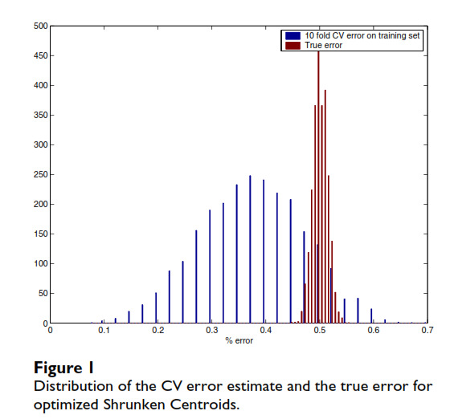
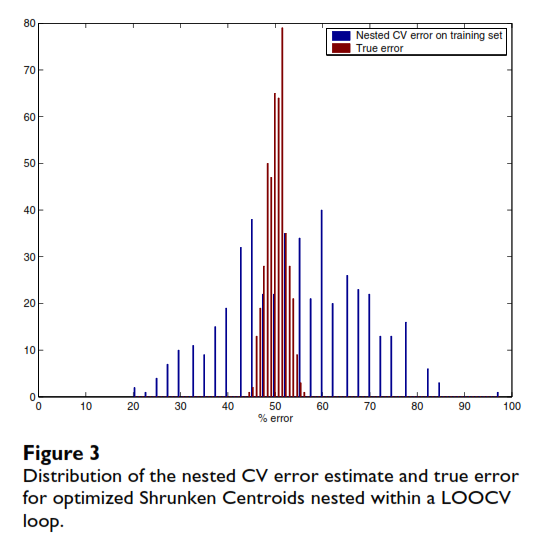
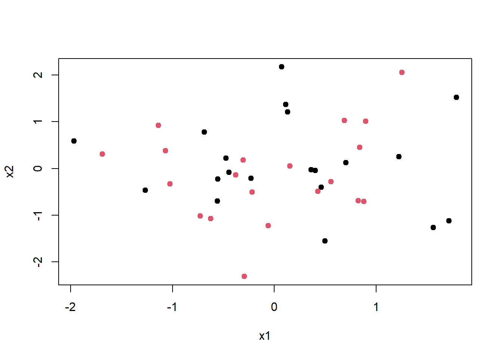
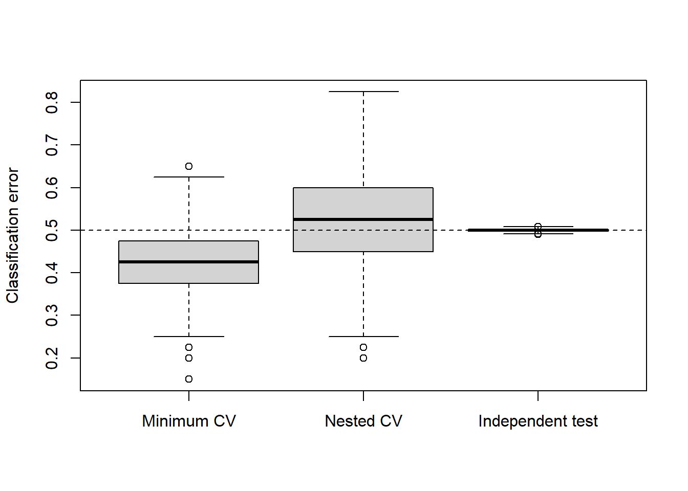

class <- factor(rep(c("A", "B"), each = 20)) # Creates 40 class labels: 20 A and 20 B
table(class)class
A B
20 20 Title: Bias in error estimation when using cross-validation for model selection
Journal: BMC Bioinformatics
Cross-validation (CV) can be used to estimate how well a classifier will perform on independent data. However, ordinary CV can become biased when the same CV procedure is used both to choose the best model settings and to estimate the performance of the resulting model.
Choosing classifier parameters is part of the model training process. When several parameter values are tested using cross-validation, the value with the lowest CV error is selected. Because this minimum is chosen from several CV estimates, it may be too optimistic and underestimate the true prediction error. The authors call this parameter selection bias.
A simulation study was used so they could compare the estimated prediction error with the true error.
The authors generated at least 1,000 simulated datasets each containing:
They considered two types of datasets:
They then applied the classification and cross-validation procedures to these simulated datasets and compared the estimated errors with performance on independent test data.
For the Shrunken Centroids classifier, the authors varied the tuning parameter Δ between 0.01 and 1. For each value of Δ, they calculated the 10-fold CV error and selected the value with the minimum error.
\[ \Delta^* = \arg\min_{\Delta} CV(\Delta) \]
They then trained the optimized classifier on all 40 training samples using the selected Δ* and tested it on 20,000 independent samples to estimate its true prediction error.
For the SVM, they tuned two parameters, C and γ. They used Leave-One-Out Cross-Validation (LOOCV) to calculate the prediction error for different combinations of these parameters and selected the combination with the minimum LOOCV error.
\[ (C^*, \gamma^*) = \arg\min_{C,\gamma} CV(C,\gamma) \]
The optimized SVM was then trained on all 40 samples and evaluated on 20,000 independent test samples to estimate the true error.
A nested cross-validation procedure was then evaluated in which the parameter-tuning step was repeated inside an outer CV loop.
For the Shrunken Centroids classifier, one sample was left out from the 40-sample dataset. The remaining 39 samples were used to select the optimal value of Δ using 10-fold CV. The classifier was then trained on those 39 samples using the selected Δ and used to predict the class of the one sample that had been left out.
This process was repeated until each of the 40 samples had been left out once. The average error across the 40 outer predictions was used as the nested CV error estimate.
The same nested-CV principle was also applied to the optimized SVM classifier.
In this setup the inner CV loop is used for parameter tuning and the outer CV loop is used to estimate prediction error.
For the null datasets, the true prediction error was approximately 50%, because there was no real difference between the two classes.
However, after tuning the classifiers, the average CV error estimates were lower than the true error:
This shows that using the minimum CV error after parameter tuning made the classifiers appear more accurate than they really were on independent data.
Figure 1 shows this bias for the optimized Shrunken Centroids classifier.

Source: Varma & Simon (2006), Figure 1.
Nested cross-validation produced error estimates that were much closer to the true error.
For the Shrunken Centroids classifier on null data:

Source: Varma & Simon (2006), Figure 3.
For the SVM classifier on non-null data:
Their results showed that nested CV substantially reduced the bias in the estimated prediction error.
Stop: using the minimum cross-validation error obtained during parameter tuning as the final estimate of how well the optimized classifier will perform on independent data.
Start: treat parameter tuning as part of the training process and use nested cross-validation, where the inner CV loop tunes the classifier and the outer CV loop estimates prediction error.
Takeaway: Nested CV provides an almost unbiased estimate of the true error of an optimized classifier.
For my computational exploration, I plan to develop a simpler simulation that demonstrates the parameter-selection bias described in the paper.
I will simulate a binary classification problem with two equally sized classes and no true difference in the predictor distributions between the classes. Therefore, the true classification error should be approximately 50%.
I will use a k-nearest neighbors (kNN) classifier and treat the number of neighbors, k, as the tuning parameter. Each simulated training dataset will contain 40 observations, with 20 observations in each class. I will compare several candidate values of k (for example, 1, 3, 5, 7, and 9). Then, I will:
The main question will be whether the minimum CV error after tuning systematically underestimates the true prediction error, and whether nested CV produces an estimate closer to the truth.
I plan to create a figure comparing the prediction-error estimates obtained from:
The figure will summarize the distribution of these errors across repeated simulations.
Because the simulated data will contain no true class difference, the independent test-set error should be approximately 50%. A persuasive result would show that the minimum CV error after tuning tends to underestimate this true error, while the nested-CV error remains closer to it.
class <- factor(rep(c("A", "B"), each = 20)) # Creates 40 class labels: 20 A and 20 B
table(class)class
A B
20 20 set.seed(123) # Keeps data reproducible
x1 <- rnorm(40, mean = 0, sd = 1) # Generates one x1 value per observation from N(0,1)
x2 <- rnorm(40, mean = 0, sd = 1) # Generates one x2 value per observation from N(0,1)sim_data <- data.frame(
class = class,
x1 = x1,
x2 = x2
) # Creates the simulated data frameplot(
sim_data$x1,
sim_data$x2,
col = sim_data$class,
pch = 19,
xlab = "x1",
ylab = "x2"
) # Plots x1 against x2, with points colored by class
library(class) # Loads the package containing the knn() function
set.seed(456) # Makes the random fold assignment reproducible
fold_id <- integer(40) # Creates a vector with one position for each observation
fold_id[class == "A"] <- sample(rep(1:10, each = 2))
fold_id[class == "B"] <- sample(rep(1:10, each = 2))
# Randomly assigns each class across 10 folds, with 2 A and 2 B per foldk_values <- c(1, 3, 5, 7, 9) # Candidate values of k to compare using CV
x <- sim_data[, c("x1", "x2")] # Keeps only the predictors used by kNNcv_error <- numeric(length(k_values)) # Creates space to store one CV error for each value of kfor (j in seq_along(k_values)) { # Repeats the process once for each candidate value of k
fold_error <- numeric(10) # Creates space to store the error from each of the 10 folds
for (fold in 1:10) { # Repeats the CV process for folds 1 through 10
train_idx <- fold_id != fold # TRUE for observations not in the current test fold
test_idx <- fold_id == fold # TRUE for observations in the current test fold
pred <- knn(
train = x[train_idx, ], # Predictor values for the 36 training observations
test = x[test_idx, ], # Predictor values for the 4 held-out observations
cl = class[train_idx], # Known class labels for the training observations
k = k_values[j] # Current value of k being evaluated
)
fold_error[fold] <- mean(pred != class[test_idx]) # Proportion of test predictions that are wrong
}
cv_error[j] <- mean(fold_error) # Average error across all 10 folds for this value of k
}cv_results <- data.frame(
k = k_values,
cv_error = cv_error
) # Combines each candidate k with its corresponding 10-fold CV error
cv_results # Shows the CV error for each k k cv_error
1 1 0.525
2 3 0.425
3 5 0.525
4 7 0.525
5 9 0.575best_index <- which.min(cv_error) # Finds the position of the smallest CV error
best_k <- k_values[best_index] # Uses that position to identify the corresponding k
best_k[1] 3min_cv_error <- min(cv_error) # Stores the lowest 10-fold CV error across all candidate k values
min_cv_error[1] 0.425set.seed(789) # Makes the inner CV fold assignments reproducible
nested_error <- numeric(40) # Stores whether each outer prediction is wrong
for (i in 1:40) { # Holds out each observation once in the outer LOOCV
outer_train_idx <- (1:40) != i # The other 39 observations
outer_test_idx <- (1:40) == i # The one held-out observation
x_outer <- x[outer_train_idx, , drop = FALSE] # Predictors for the 39 training observations
class_outer <- class[outer_train_idx] # Class labels for the 39 training observations
inner_fold_id <- integer(39) # Creates fold assignments for the inner 10-fold CV
inner_fold_id[class_outer == "A"] <- sample(
rep(1:10, length.out = sum(class_outer == "A"))
)
inner_fold_id[class_outer == "B"] <- sample(
rep(1:10, length.out = sum(class_outer == "B"))
)
# Spreads A and B observations approximately evenly across the 10 inner folds
inner_cv_error <- numeric(length(k_values)) # Stores inner CV error for each k
for (j in seq_along(k_values)) { # Tries each candidate value of k
inner_error <- numeric(39) # Stores the error for each of the 39 inner-CV observations
for (fold in 1:10) {
inner_train_idx <- inner_fold_id != fold
inner_test_idx <- inner_fold_id == fold
pred_inner <- knn(
train = x_outer[inner_train_idx, , drop = FALSE],
test = x_outer[inner_test_idx, , drop = FALSE],
cl = class_outer[inner_train_idx],
k = k_values[j]
)
inner_error[inner_test_idx] <- as.numeric(
pred_inner != class_outer[inner_test_idx]
)
}
inner_cv_error[j] <- mean(inner_error) # Proportion wrong across all 39 inner-CV predictions
}
best_inner_k <- k_values[which.min(inner_cv_error)] # Selects k using only the 39 training observations
pred_outer <- knn(
train = x_outer,
test = x[outer_test_idx, , drop = FALSE],
cl = class_outer,
k = best_inner_k
)
nested_error[i] <- pred_outer != class[outer_test_idx] # Records whether the untouched observation was misclassified
}
nested_cv_error <- mean(nested_error) # Average error across all 40 outer predictions
nested_cv_error[1] 0.65set.seed(999) # Makes the independent test data reproducible
test_class <- factor(rep(c("A", "B"), each = 10000)) # Creates 20,000 test observations
test_x <- data.frame(
x1 = rnorm(20000, mean = 0, sd = 1),
x2 = rnorm(20000, mean = 0, sd = 1)
) # Generates new predictor values from the same null distribution
test_pred <- knn(
train = x, # Uses all 40 original observations as training data
test = test_x, # Predicts the 20,000 completely new observations
cl = class, # Known class labels for the 40 training observations
k = best_k # Uses the k selected by ordinary 10-fold CV
)
test_error <- mean(test_pred != test_class) # Proportion of independent test observations classified incorrectly
test_error[1] 0.498run_one_simulation <- function() { # Runs the complete analysis once on one new simulated dataset
class <- factor(rep(c("A", "B"), each = 20)) # Creates 40 class labels: 20 A and 20 B
x <- data.frame(
x1 = rnorm(40, mean = 0, sd = 1),
x2 = rnorm(40, mean = 0, sd = 1)
) # Generates two predictors with no true difference between classes
k_values <- c(1, 3, 5, 7, 9) # Candidate values of k to compare
fold_id <- integer(40) # Creates a vector with one fold assignment for each observation
fold_id[class == "A"] <- sample(rep(1:10, each = 2))
fold_id[class == "B"] <- sample(rep(1:10, each = 2))
# Spreads A and B observations evenly across the 10 folds
cv_error <- numeric(length(k_values)) # Creates space to store one CV error for each k
for (j in seq_along(k_values)) { # Tests each candidate value of k
fold_error <- numeric(10) # Creates space for the error from each of the 10 folds
for (fold in 1:10) { # Runs through each fold
train_idx <- fold_id != fold # Observations used for training
test_idx <- fold_id == fold # Observations held out for testing
pred <- knn(
train = x[train_idx, , drop = FALSE],
test = x[test_idx, , drop = FALSE],
cl = class[train_idx],
k = k_values[j]
) # Uses the current k to predict the held-out fold
fold_error[fold] <- mean(pred != class[test_idx]) # Calculates the error for this fold
}
cv_error[j] <- mean(fold_error) # Calculates the average 10-fold CV error for this k
}
best_k <- k_values[which.min(cv_error)] # Selects the k with the lowest CV error
min_cv_error <- min(cv_error) # Stores the minimum ordinary CV error
nested_error <- numeric(40) # Creates space for the 40 outer-test results
for (i in 1:40) { # Holds out each observation once in the outer LOOCV
outer_train_idx <- (1:40) != i # Identifies the 39 outer-training observations
outer_test_idx <- (1:40) == i # Identifies the one outer-test observation
x_outer <- x[outer_train_idx, , drop = FALSE] # Keeps predictors for the 39 outer-training observations
class_outer <- class[outer_train_idx] # Keeps their class labels
inner_fold_id <- integer(39) # Creates fold assignments for the 39 observations
inner_fold_id[class_outer == "A"] <- sample(
rep(1:10, length.out = sum(class_outer == "A"))
)
inner_fold_id[class_outer == "B"] <- sample(
rep(1:10, length.out = sum(class_outer == "B"))
)
# Spreads A and B observations approximately evenly across the 10 inner folds
inner_cv_error <- numeric(length(k_values)) # Creates space for one inner CV error for each k
for (j in seq_along(k_values)) { # Tests each candidate k inside the outer training set
inner_error <- numeric(39) # Stores whether each of the 39 inner-CV predictions is wrong
for (fold in 1:10) { # Runs through the 10 inner folds
inner_train_idx <- inner_fold_id != fold # Observations used for inner training
inner_test_idx <- inner_fold_id == fold # Observations used for inner testing
pred_inner <- knn(
train = x_outer[inner_train_idx, , drop = FALSE],
test = x_outer[inner_test_idx, , drop = FALSE],
cl = class_outer[inner_train_idx],
k = k_values[j]
) # Predicts the current inner test fold using the current k
inner_error[inner_test_idx] <- as.numeric(
pred_inner != class_outer[inner_test_idx]
) # Records 0 for a correct prediction and 1 for a wrong prediction
}
inner_cv_error[j] <- mean(inner_error) # Calculates the inner CV error for this k
}
best_inner_k <- k_values[which.min(inner_cv_error)] # Chooses the best k using only the 39 observations
pred_outer <- knn(
train = x_outer,
test = x[outer_test_idx, , drop = FALSE],
cl = class_outer,
k = best_inner_k
) # Uses the selected k to predict the untouched outer observation
nested_error[i] <- as.numeric(
pred_outer != class[outer_test_idx]
) # Records whether the outer prediction was correct or wrong
}
nested_cv_error <- mean(nested_error) # Calculates the error across all 40 outer predictions
test_class <- factor(rep(c("A", "B"), each = 10000)) # Creates 20,000 independent test labels
test_x <- data.frame(
x1 = rnorm(20000, mean = 0, sd = 1),
x2 = rnorm(20000, mean = 0, sd = 1)
) # Generates independent predictors from the same null distribution
test_pred <- knn(
train = x,
test = test_x,
cl = class,
k = best_k
) # Uses the optimized classifier to predict the independent test data
test_error <- mean(test_pred != test_class) # Calculates the independent test-set error
c(
min_cv_error = min_cv_error,
nested_cv_error = nested_cv_error,
test_error = test_error
) # Returns the three error estimates from this simulation
}set.seed(2026) # Makes the repeated simulation reproducible
sim_results <- replicate(
500,
run_one_simulation()
) # Repeats the complete simulation 500 times
sim_results <- as.data.frame(t(sim_results)) # Converts the results into a data frame with one row per simulation
head(sim_results) # Displays the first six simulations min_cv_error nested_cv_error test_error
1 0.325 0.450 0.49910
2 0.575 0.625 0.49565
3 0.200 0.200 0.50090
4 0.400 0.650 0.50120
5 0.525 0.625 0.49605
6 0.475 0.525 0.50280colMeans(sim_results) # Calculates the average error from each method across all 500 simulations min_cv_error nested_cv_error test_error
0.4248000 0.5210000 0.4998167 boxplot(
sim_results$min_cv_error,
sim_results$nested_cv_error,
sim_results$test_error,
names = c("Minimum CV", "Nested CV", "Independent test"),
ylab = "Classification error"
) # Compares the distributions of the three error estimates across 500 simulations
abline(h = 0.50, lty = 2) # Shows the expected 50% error under the null
Across 500 simulated null datasets, the minimum ordinary cross-validation error averaged 42.48%, while the independent test-set error was 49.98%. This shows that the minimum CV error after tuning made the classifier appear more accurate than it really was.
Nested cross-validation produced an average error of 52.10%, which was much closer to the independent test-set error. This supports the main point of Varma and Simon (2006): when cross-validation is used to tune a model, the minimum CV error can be optimistically biased while nested cross-validation provided an estimate closer to the independent test-set error in this simulation.
In this small-sample simulation, nested CV was also more variable across repetitions, so the improvement was mainly in reducing bias rather than producing a more stable estimate.